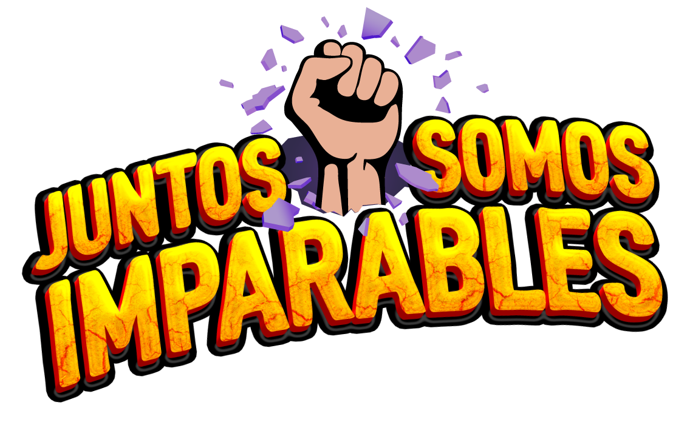

Secciones
Seleccione una sección para desplegar sus procesos y reportes.
Deslice hacia la derecha para seguir la ruta →
Glosario
Consulta de términos, indicadores y procesos de OSA Matrix.
Explore. Connect. Discover.
Driving Our E2E Business Performance Management Processes

Seleccione una sección para desplegar sus procesos y reportes.